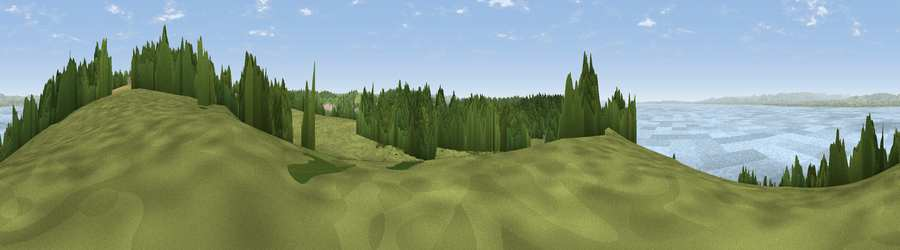

Viewpoint near Weston in Gordano
#5621 in England · top 10% of its area beats it · near Weston in GordanoThe view, rendered

A 360° render of this exact spot computed from the terrain model, tree cover and land cover — summer colours, afternoon light, calibrated against photographs of famous viewpoints. Real trees, hedges and buildings will differ in detail.
The panorama
Grey silhouette: terrain skyline in each direction (720 bearings, Earth curvature and refraction included). Dashed green: skyline with trees (+15 m) and buildings (+8 m) as obstacles. Blue strip: how far the ground is visible on each bearing.
Where the view opens
Wedge length = distance to the farthest visible ground on that bearing (vegetation-aware). Rings at 10, 25 and 50 km.
What fills the view
38% water · 34% grassland · 25% woodland · 2% cropland · 2% built-up
Angular shares of the visible panorama (visual magnitude), not map area. Landscape diversity 0.53 (0–1 Shannon).
Key numbers
More beautiful places nearby
The staircase of upgrades: each row has a higher view potential than everything closer. Driving times are estimates from straight-line distance, calibrated against real road routing — check an actual route before setting out.
| Place | Direction | Drive | Score |
|---|---|---|---|
| Viewpoint near Tickenham | SE · 3 km | ~7 min | 72.1 |
| Dial Hill | SW · 4 km | ~9 min | 74.9 |
| Beacon Batch | SSE · 18 km | ~31 min | 79.4 |
| Bleadon Hill [Loxton Hill] | SSW · 19 km | ~33 min | 79.6 |
| Viewpoint near Stinchcombe | NE · 38 km | ~57 min | 80.5 |
| Viewpoint near Holford | SW · 45 km | ~65 min | 80.8 |
| Viewpoint near East Quantoxhead | SW · 45 km | ~65 min | 83.1 |
| Viewpoint near West Quantoxhead | SW · 45 km | ~65 min | 87.9 |
51.46912, -2.81300 · source: screening · position refined by local search. Computed location — check access rights before visiting.